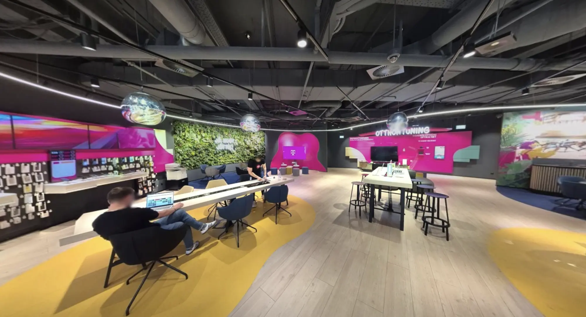
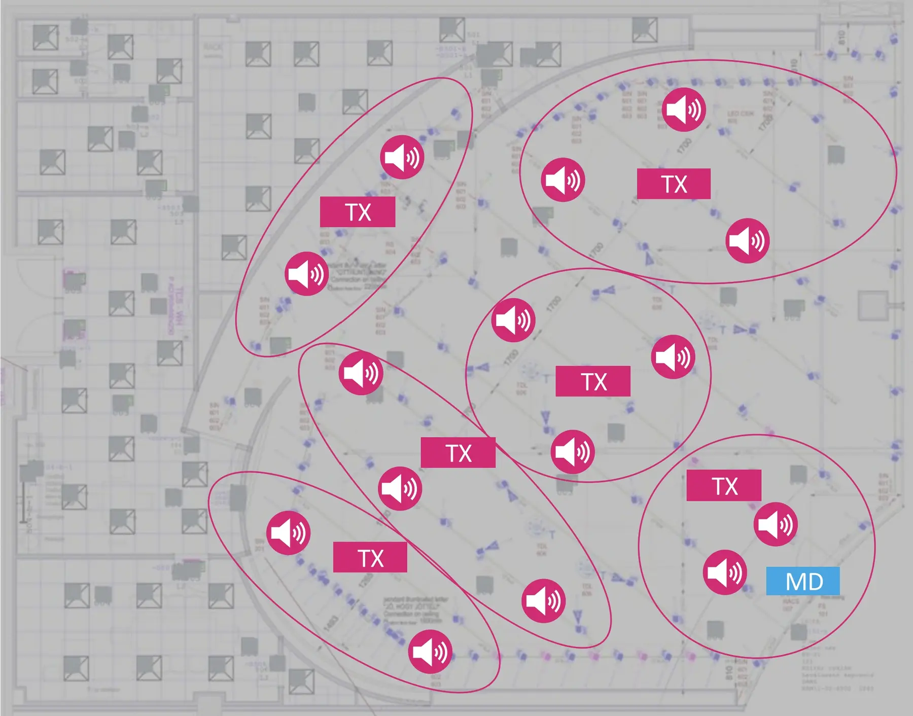
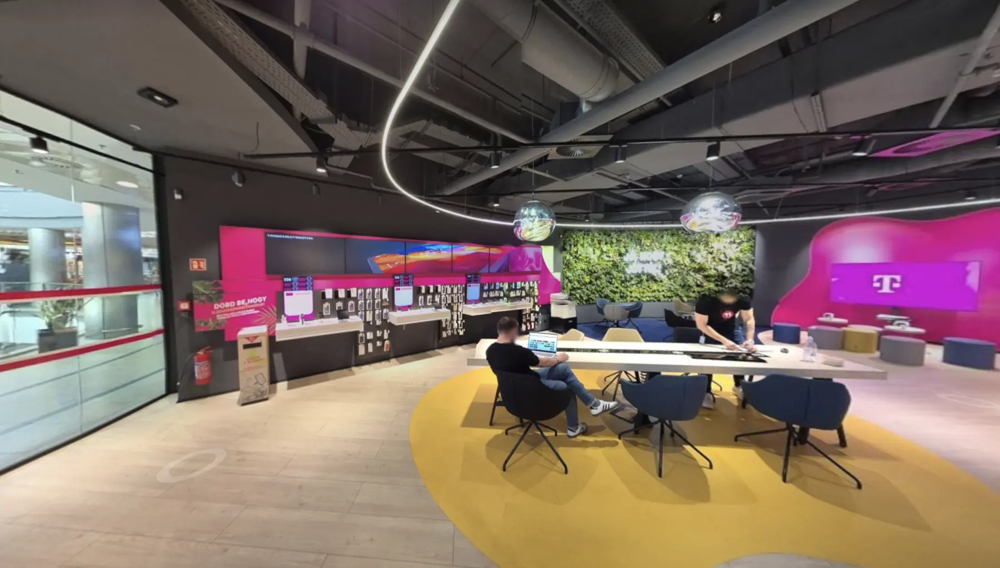
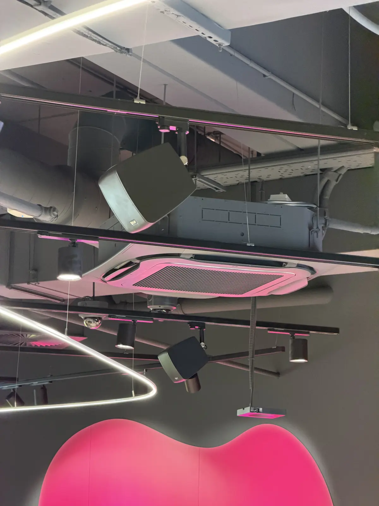
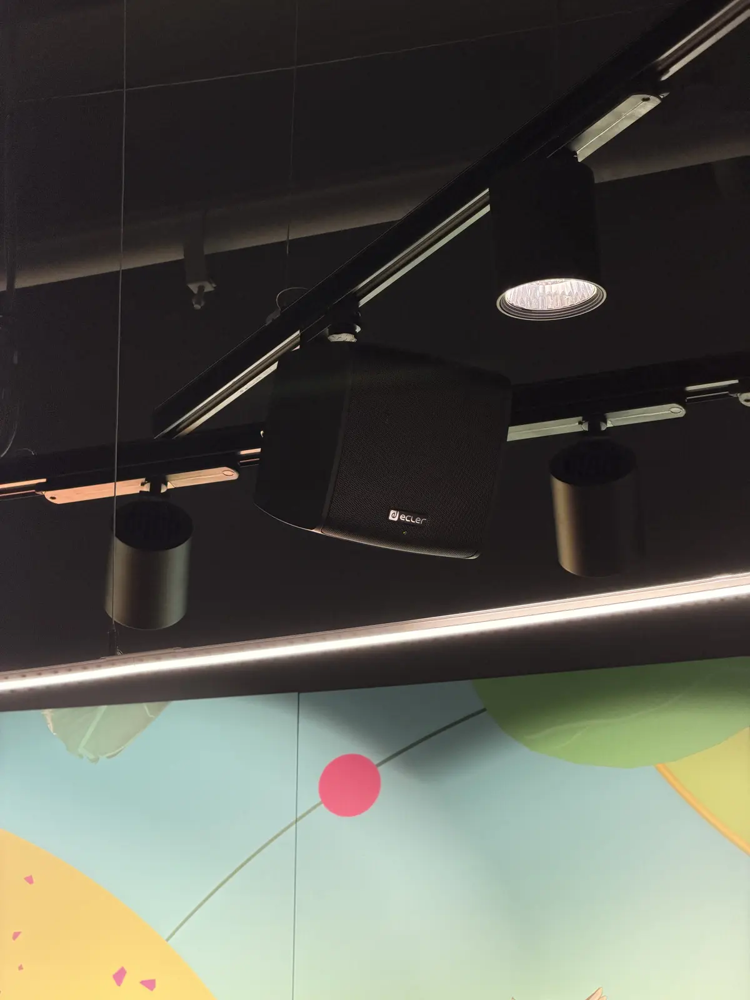
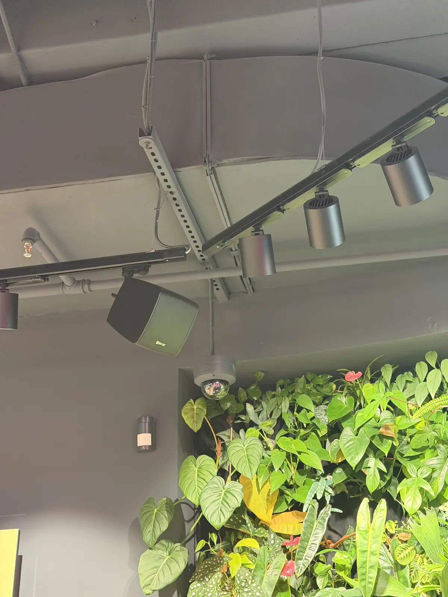
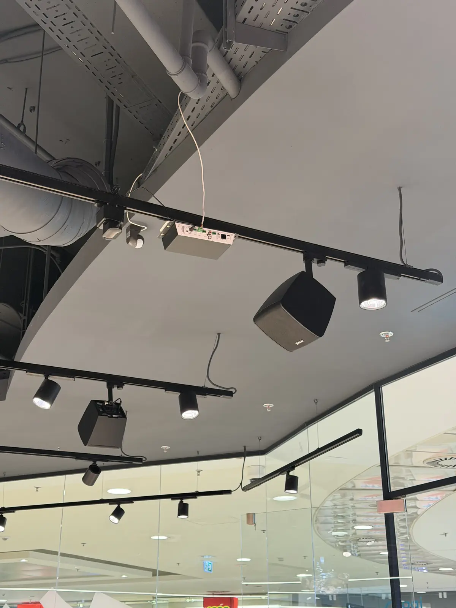
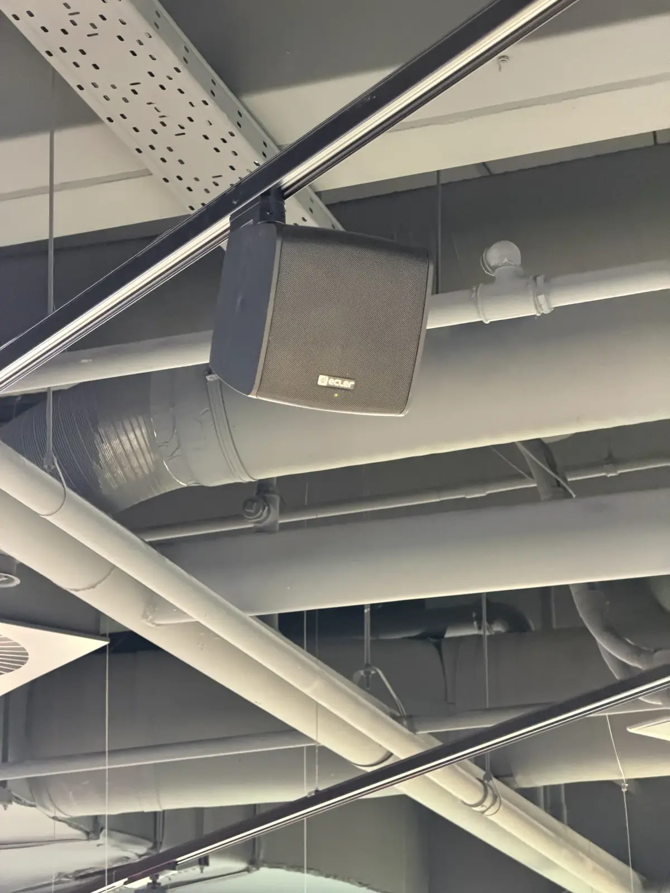

Egy tér,
három hangkarakter
Hat hangzóna, zónánként két-három diszkrét hangsugárzó a világítási sínekre szerelve. Mindegyik zóna külön vezérelhető — a hangkép ott változik, ahol a vendég éppen jár.

Magyar Telekom × S12
A Music Pilot zónákra hangolt hangteret ad az üzletnek: üdvözlőhang a bejáratnál, kurált zene a tér közepén, természethangok a zöldfalnál.
Az üzlet atmoszférája eddig is tudatosan épült: fény, anyagok, növények. A Music Pilot ugyanezt a gondolatot viszi tovább a hallható térbe — nem háttérzajként, hanem a tér karakteréhez igazított, zónázott hangzásként.
Minden zóna azt a hangot kapja, ami a funkciójához illik. A vendég ebből csak annyit érzékel, hogy az üzletben jó lenni — pontosan ez a cél.

Hat hangzóna, zónánként két-három diszkrét hangsugárzó a világítási sínekre szerelve. Mindegyik zóna külön vezérelhető — a hangkép ott változik, ahol a vendég éppen jár.
A bejárati zóna mozgásérzékelővel működik. Amikor vendég érkezik, finom üdvözlőhang szólal meg — az üzlet észreveszi, hogy megérkeztél, mielőtt bárki köszönne.
A középső zónákban az S12 által készített, Ulrich Klenke kurálta playlistek szólnak — a Telekom hangzásvilágához igazítva, nem véletlenszerű rádiófolyamként.
A zöldfal körül madárcsicsergés és halk természeti hangkulissza szól. A vizuálisan legnyugodtabb pont így hallhatóan is az üzlet legnyugodtabb pontja lett.

A leggyakoribb vendégreakció a zöldfalnál. A madárcsicsergés annyira természetesen ül a térben, hogy a vendégek rendszeresen megkérdezik, nem lakik-e valami a növények között. Nem lakik — de a kérdés maga a legjobb visszajelzés: a hang észrevétlenül része lett a térnek, és beszélgetést indít.
A hangot a böngésző kelti életre — a bemutató kedvéért, az üzletben az S12 hangkulisszája szól.
Matt fekete hangsugárzók a meglévő világítási síneken — új fúrás, látható kábelezés és külön szerelvény nélkül. A telepítést az S12 végezte, üzemelő üzlet mellett.





A kollégák telefonos alkalmazásból választanak playlistet és állítják a hangerőt — zónánként, külön-külön. Ha a zenei zónában tanácsadás zajlik, ott halkabbra vehető; a zöldfal madarai közben ugyanúgy énekelnek.
Az S12 a Telekom hangidentitás-partnere: ők készítették a márka új hangjelzését is. Az Árkád pilotban a teljes hangzásvilágot ők állították elő — a playlistektől a természeti hangkulisszáig —, a zenei kurátor Ulrich Klenke.
A rendszer élesben, az Árkád üzlet teljes eladóterében.
A kollégák beszámolói alapján a vendégek kifejezetten szeretik — és ezt maguktól mondják el. A zöldfal madárhangjai visszatérő beszédtéma: sokan igazi madarat keresnek a növények között.
Strukturált visszajelzés-gyűjtés az üzlet csapatától — döntés a folytatásról és a kiterjesztésről.